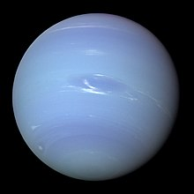

نپتون (به انگلیسی: Neptune) هشتمین سیارهٔ منظومه شمسی (و با در نظر نگرفتن پلوتو که یک سیاره کوتوله است) دورترین سیاره شناخته شده میباشد. نپتون پس از مشتری، زحل و اورانوس، چهارمین سیاره بزرگ از لحاظ اندازه میباشد. نپتون به همراه سیاره کوتوله پلوتو تنها سیارههایی هستند که از زمین با چشم غیرمسلح رویت نمیشوند چون فاصله خورشید تا نپتون حدود سی برابر فاصله زمین تا خورشید است. در میان غولهای گازی، چگالی نپتون از همه بیشتر است و به همین دلیل کوچکترین اندازه را میان سیارههای همردیف خود دارد. جرم نپتون به تنهایی ۱۷ برابر جرم زمین است و قطر آن با اندازه ۴۹٬۵۲۸ کیلومتر چهار برابر قطر زمین میباشد. هر سال در نپتون معادل ۱۶۵ سال زمینی است ولی یک دور گردش وضعی این سیاره در مدت ۱۶ ساعت و ۷ دقیقه انجام میگیرد. نام نپتون از نام خدای رومی دریاها گرفته شده و دلیل این نامگذاری رنگ آبی پررنگی است که باعث زیبایی منحصربفرد این سیاره سرد میشود. اتمسفر خارجی نپتون به دلیل فاصله بسیار زیاد از خورشید سردترین مکان در منظومه شمسی با ۵۵ کلوین (−۲۱۸ درجه سلسیوس؛ −۳۶۱ درجه فارنهایت) است. دمای مرکز این سیاره ۵٬۴۰۰ کلوین (۵٬۱۰۰ درجه سلسیوس؛ ۹٬۳۰۰ درجه فارنهایت) میباشد.[۱۵] اتمسفر نپتون همچنین با سرعت باد ۲٬۱۰۰ کیلومتر بر ساعت (۵۸۰ متر بر ثانیه؛ ۱٬۳۰۰ مایل بر ساعت) رکورددار سرعت باد در میان سیارات منظومه خورشیدی است.[۱۶]